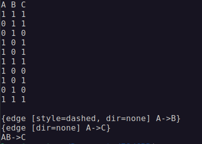

|
GUHA
Общий унарный гипотезный автомат
|
|
GUHA
Общий унарный гипотезный автомат
|
GUHA - это метод автоматической генерации гипотиз на основе эмпирических данных, то есть дата майнинга. Формируемые методом ответы из себя представляют код на языке dot, помещаемый в graphviz и формирующий граф взаимосвязей. Хотя это необязательно и можно вывести все в письменном виде.
Для получения необходимых результатов нужно:
Данная реализация позволяет в открытую изменять параметры системы и вносить данные.
Данная функциональность может быть дополнена по необходимости.
Пример вывода:

GUHA - работает по принципу машины Тьюринга, то есть принимает на вход конвеер чисел и работает с их бинарной структурой. Каждое число является объектом с атрибутами, в роли которых выступают биты. Сами атрибуты вычленяются с помощью масок по формуле
\[ (o \wedge m) \equiv m \]
, где m - это маска, а o - объект. Когда система составляет "правило", она считает количество членов содержащих оба, свободных членов множества A, свободных членов множества B, и не содержащих ни одного.
| \ | \[ \phi \] | \[ \neg\phi \] |
\[ \psi \] | \[ \phi \wedge \psi \] | \[ \phi \not\rightarrow \psi \] |
\[ \neg\psi \] | \[ \psi \not\rightarrow \phi \] | \[ \phi \downarrow \psi \] |
Метод может работать на основе одной или нескольких из 4 функции, 2 импликационные (могут быть использованы как ассоциативные) и 2 ассоциативные. На данный момент в реализации учавствует FIMPL, но его достаточно для выявления характера связей и зависимостей, так ищутся 2 отношения 4х результатов FIMPL (ab, ac, bd, cd).
\[ FIMPL(a, b) = {a \over a+b} : a>all \]
Главной проблемой GUHA можно назвать использование теста Фишера (в этой реализации он не учавствует), который представляет из себя сумму отношений факториалов количества всех элементов.
\[ \sum^{min(b,c)}_{i=0}{(a+b)!(a+c)!(b+d)!(c+d)! \over m!(a+i)!(b-i)!(c-i)!(d+i)!} \leq\alpha \]
Посчитать факториал от миллиарда практически невозможно, но именно столько обычно записей и хранится. А также LIMPL
\[\sum^{r}_{i=a}{\begin{pmatrix}{r \\ i}\end{pmatrix}p^i(1-p)^{r-i}} : r = a+b\]
, который также работает с целыми значениями.
Ограничения в 32 атрибута (тип int занимает 4 байта (32 бита)), связанное с тем, что используется бинарная сетка вместо вектора логических значений (bool).
Сложность алгоритма зависит не от количества атрибутов или объектов, а от количества единиц в данных. Чем больше в данных связанных атрибутов, тем дольше система будет их выявлять, поэтому если атрибутов очень много лучше проставить ограничение на функцию guha, к примеру до 3 уровней.
Метод GUHA является измененным методом Apriori, однако в отличии от Apriori, он считает не только количество конъюнкций, но еще количество коимпликаций и стрелок пирса. Так как во время расчетов работает switch (переадресация на нужную ячейку), система считает с примерно той же скоростью, но при этом вычленяет больше информации, которую можно использовать сразу.